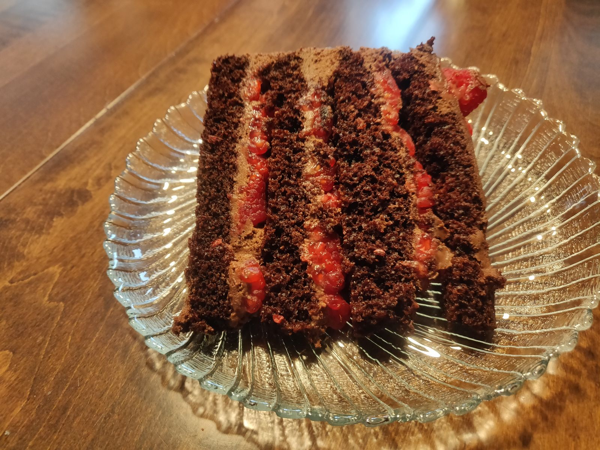
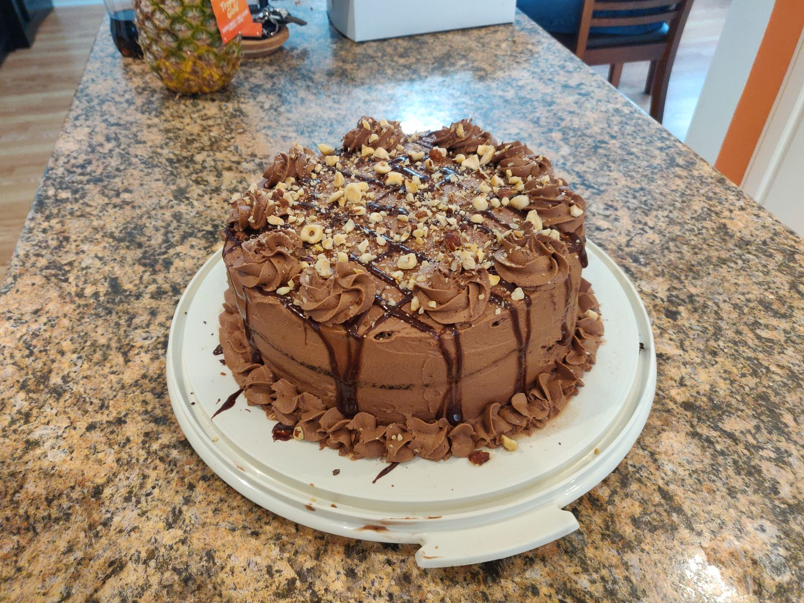
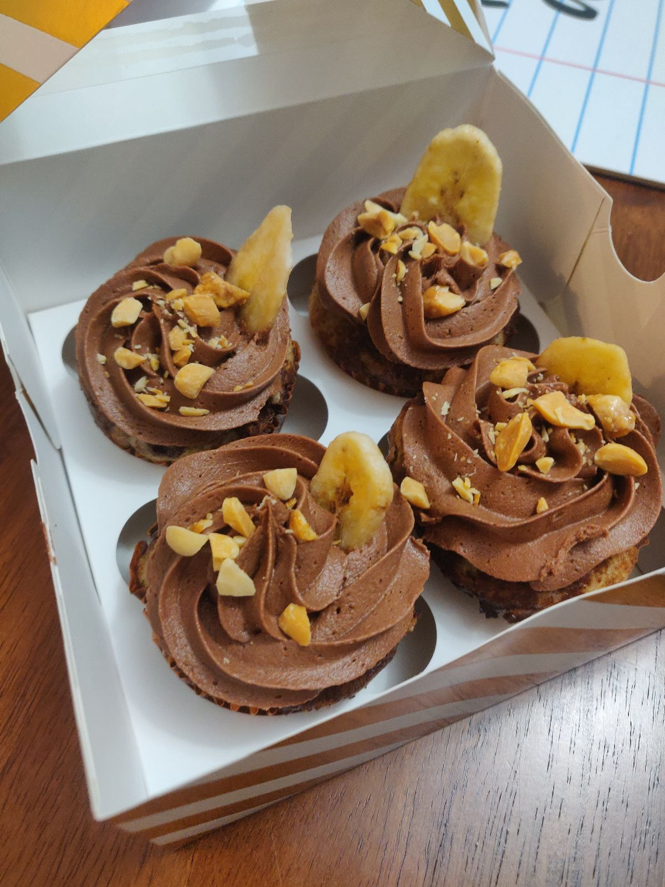

Chocolate Mousse



Description
This wonderfully rich whipped chocolate mousse is the basis of many cool summery desserts. Use it as the filling of a
no bake pie, as frosting or filling on any cake, or simply on its own
with some berries and whipped cream.
This recipe is adapted from the filling of Sally's Baking Addictions Dark Chocolate Mousse Cake
Ingredients
- 1/2 cup hot water(I use the hottest water my kitchen tap will provide)
- 1/4 cup cocoa powder
- 200g chopped dark chocolate- equivalent of 2 dark chocolate bars
- 2 cups heavy cream, chilled
- Optionally, if using as a cake frosting: 2 Tablespoon powdered sugar AND 1 Tablespoon Instant Clear Jel, for stiffness
Steps
- In a microwave safe bowl, carefully melt the chopped chocolate in the microwave. The safest way to do so
is using lower power settings on your microwave and short increments. For example, I set my microwave to half power and
45 second intervals, stirring well between each interval, until the chocolate is fully melted.
- Whisk together the hot water and cocoa powder then add to the melted chocolate stirring until completly combined.
- In a stand mixer with the whisk attachment or a hand mixer, beat heavy cream until medium peaks form.
- Optionally, if using as a frosting for a cake: Sift together powdered sugar and Instant Clear Jel and add to the heavy cream just before peaks start to form. This will create a stiffer mousse that will withstand being used as frosting.
- Pour the chocolate mixture into the whipped cream and fold it in until combined
- Refrigerate overnight to set